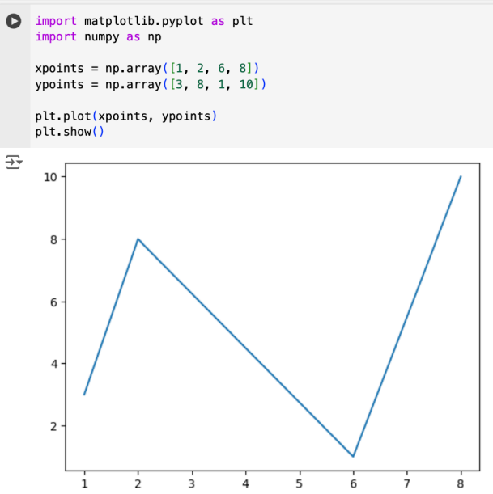
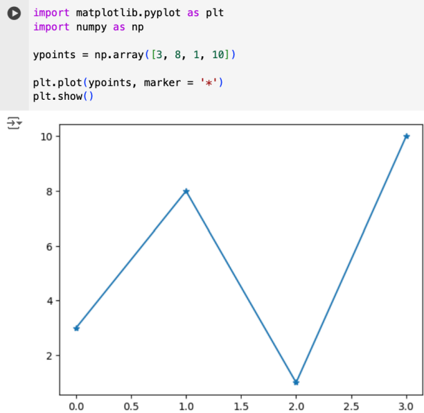
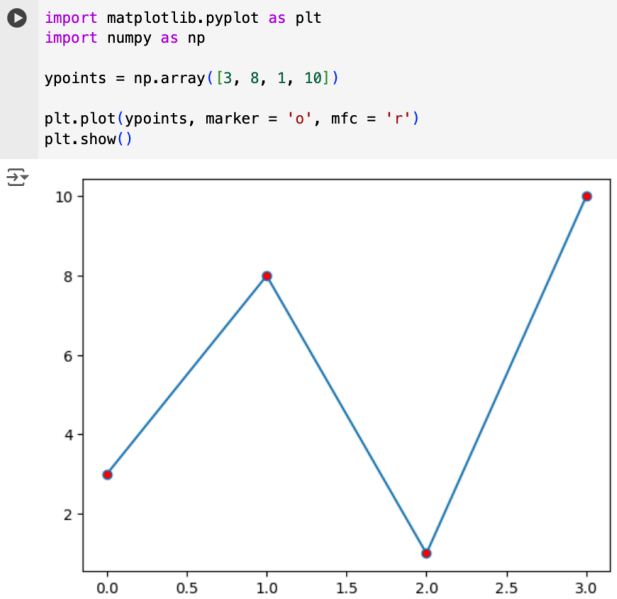
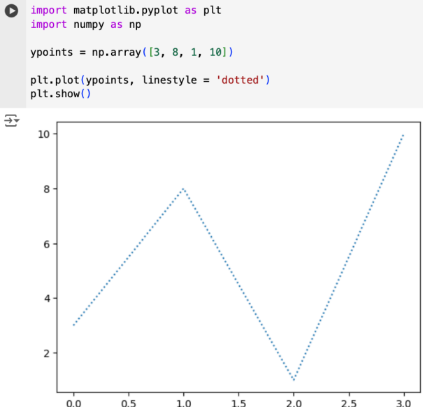
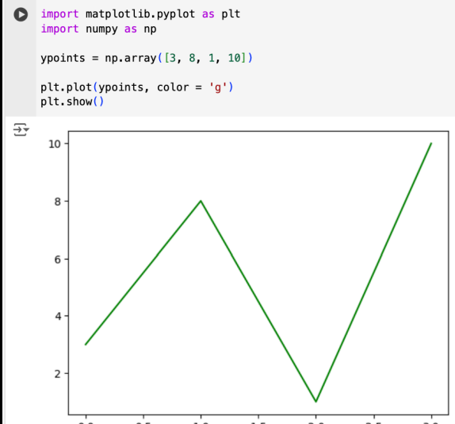
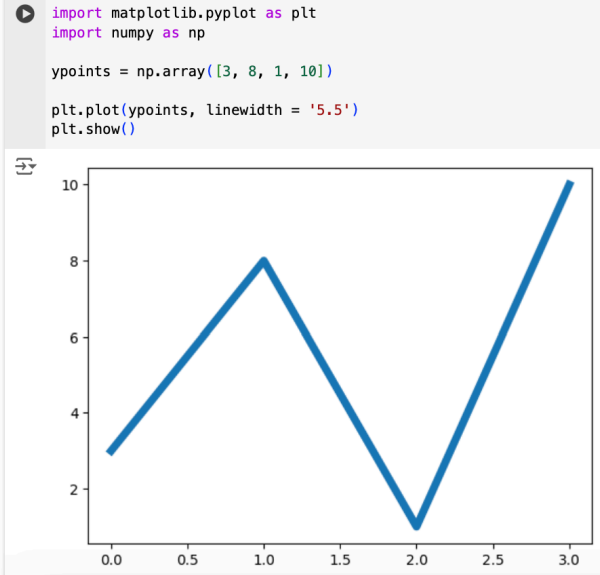
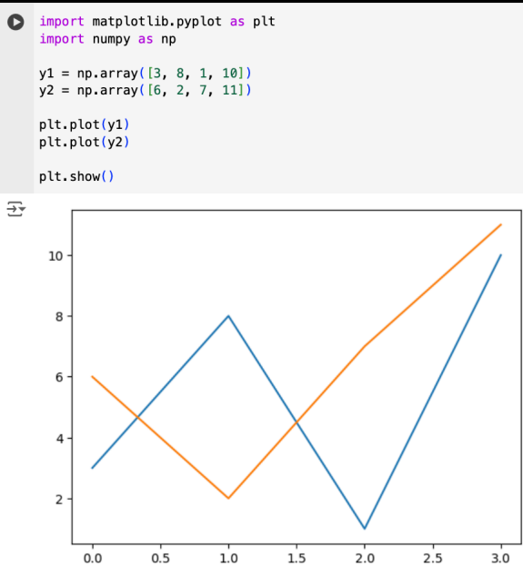

• Library Matplotlib biasanya digunakan untuk membuat plot/diagram dengan menggunakan Bahasa Python.
• Berikut adalah contoh penerapan dari Matplotlib untuk membuat diagram baris.
Pada contoh implementasi berikut, akan ditunjukkan contoh pembuatan plot yang hanya menunjukkan koordinat (tanpa garis).
Berikut ini adalah contoh script dari diagram garis yang menghubungkan tiga titik pada koordinat (1, 3) ke (2, 8) lalu ke (6, 1) dan terakhir ke (8, 10).
Keyword argument marker digunakan untuk memodifikasi bentuk dan tampilan titik koordinat
Script berikut digunakan untuk memberikan warna pada marker
Untuk merubah tampilan dari diagram garis maka digunakan keyword argument linestyle
Untuk merubah warna dari diagram garis, maka digunakan keyword argument color. Berikut contohnya.
Untuk menebalkan garis pada diagram garis, digunakan keyword linewidth. Berikut contohnya.
Contoh script berikut digunakan untuk menambahkan garis pada diagram garis
